The package mdepriv translates the homonymous Stata command (Pi Alperin & Van Kerm, 2009) for R users.
mdepriv offers four methods to calculate synthetic scores of multiple deprivation from unidimensional indicators and/or basic items of deprivation. While it originated in the field of poverty research, it is equally suitable for measures of the severity of humanitarian conditions.
The methods offered range from simple aggregation of equally weighted indicators to more involved ones that take into account desired traits of deprivation and severity indices. The user has the option to 1. penalize redundant items / indicators with lower weights and/or 2. to reward better discriminating ones with higher weights - or neither. All methods generate unit-level deprivation / severity scores that are linear combinations of the items / indicators, with their weights designed to sum to one. They return user-defined selections of output elements, with the aggregate deprivation level and a table of item / indicator means, weights and contributions to the aggregate deprivation / severity as the default.
mdepriv accepts indicators and items standardized to the interval [0,1]. It does not accept arguments with missing values; such observations have to be removed from the dataframe or matrix input beforehand. All items / indicators have to be oriented negatively (higher values denote less desirable states).
Fundamentally, the four methods
differ by their increasing sensitivity to deprivations / adverse conditions suffered by the poorest / most oppressed units (individuals, households, communities). The idea is to weight more strongly specific deprivations / adverse conditions that the more advantaged units have overcome, but which are still afflicting those at the bottom. Typically, in poverty studies, this makes good sense with durable household assets, which are observed as dichotomous “has / does not have” and recorded as binary (0/1) variables.
In humanitarian assessments it is less common that the severity of a lacking / suffering / threat is inversely proportionate to its prevalence. When prevalence-dependent weighting is not appropriate, mdepriv gives the user three options:
This third option is meaningful primarily in combination with the Betti-Verma method. This method deserves particular attention. Its defining feature is a double-weighting algorithm:
Betti-Verma is the only one among the four methods sensitive to the information content of continuous items / indicators. mdepriv automatically computes the weight of each item / indicator proportionate to the product of its two weighting factors.
The mdepriv function makes the second weighting factor available also for the other three methods, but not all combinations are practically meaningful. mdepriv automatically recognizes the appropriate type of correlations between pairs of items / indicators, but the user can impose a particular type collectively on all pairs (rarely meaningful!). When the user opts for double-weighting (other than in Betti-Verma, where it is the default), the options have to be specified for both factors. mdepriv notation for the first factor is wa, for the second it is wb. However, not all combinations are practically meaningful. Recommended combinations depend on the analytic objective. Plausibly, the most relevant are:
| Objective | First weighting factor (wa) | Second weighting factor (wb) |
|---|---|---|
| Indifferent to prevalence (dichotomous items) and to information content (continuous). But controlling for redundancy is important. | Equi-proportionate | on |
| Items are all dichotomous. Limited sensitivity to low prevalence desired. Not controlling for redundancy. | Desai-Shah | off |
| Items are all dichotomous. High sensitivity to low prevalence desired. Not controlling for redundancy. | Betti-Verma | off |
| All items are continuous, and controlling for redundancy is important. | Betti-Verma | on |
| Items are mixed dichotomous / continuous. Indifferent to prevalence of the dichotomous, but concerned for information content of the continuous. Redundancy control is important. i.e. Two-level deprivation / severity model: | ||
| Level 1: Combine all dichotomous items, save scores as one more continuous indicator for the second level. | Equi-proportionate | on |
| Level 2: Combine continuous items and indicator saved from first level. Produces aggregate deprivation / severity statistic. | Betti-Verma | on |
The Cerioli-Zani model appears to be primarily of historic interest. It was one of the first to pursue the so-called fuzzy-set approach to multi-dimensional poverty measurement, which Betti and Verma subsequently deepened. The interested user may consult the reader edited by Lemmi and Betti (2006), but familiarity with fuzzy sets is not required for the understanding and application of mdepriv.
As a final introductory remark, it should be said that the Betti-Verma method is particularly appropriate when a concept (deprivation, severity of conditions, etc.) has many aspects, its dimensionality is not well understood, and classical methods to unravel the dimensions (e.g., factor analysis) are likely distorted by redundancies among the available indicators.
The following focuses on the technical handling of the mdepriv package. Context and rationale are not discussed here. The purpose is to walk the user through the manifold arguments and outputs of the core function mdepriv. Familiarity with the basics of R is presumed. Still, things are kept at a pretty low skill level so that users with little R experience can follow. The code provided is intended as copy-and-paste material, which users can modify for practice or for real-world data analysis.
Chiefly we will use the simulated dataset simul_data with 100 observations, which are enough to demonstrate functionality. To showcase a two-level deprivation model we put the dataset MSNA_HC to use. Both datasets are part of the mdepriv-package; thus they do not require further sourcing.
Packages used in the following:
# install package devtools if not yet installed
# install.packages("devtools")
# install fast from GitHub without vignettes (not recommanded)
# devtools::install_github("a-benini/mdepriv")
# recommended: installation at a slower pace from GitHub including vignettes:
# pkgs_4_vignettes <- c("tidyverse", "kableExtra", "knitr", "rmarkdown")
# packages required to build mdepriv's vignettes from GitHup repository
# new_pkgs_4_vignettes <- pkgs_4_vignettes[!pkgs_4_vignettes %in% installed.packages()]
# among these packages the ones not yet installed
# if(length(new_pkgs_4_vignettes) > 0){install.packages(new_pkgs_4_vignettes)}
# install the still missing packages
# devtools::install_github("a-benini/mdepriv", build_vignettes = TRUE)
# install mdepriv from GitHup with its vignettes
library(mdepriv)
help(package = "mdepriv") # mdepriv package documentation
# install.packages("tidyverse")
library(tidyverse) # includes packages for data handling and graphics
#> ── Attaching packages ─────────────────────────────────────────────────────────────────── tidyverse 1.3.0 ──
#> ✓ ggplot2 3.2.1 ✓ purrr 0.3.3
#> ✓ tibble 2.1.3 ✓ dplyr 0.8.3
#> ✓ tidyr 1.0.0 ✓ stringr 1.4.0
#> ✓ readr 1.3.1 ✓ forcats 0.4.0
#> ── Conflicts ────────────────────────────────────────────────────────────────────── tidyverse_conflicts() ──
#> x dplyr::filter() masks stats::filter()
#> x dplyr::group_rows() masks kableExtra::group_rows()
#> x dplyr::lag() masks stats::lag()When using the function mdepriv to calculate synthetic scores of multiple deprivations, at a minimum the first two of its arguments - data and items - need to be specified. The former is a data.frame or matrix containing the items as columns. The later contains the column headings of the items of interest as character strings.
mdepriv(data = simul_data, items = c("y1", "y3", "y4", "y7"))
#> $weighting_scheme
#> [1] "Cerioli & Zani (1990) weighting scheme"
#>
#> $aggregate_deprivation_level
#> [1] 0.299315
#>
#> $summary_by_item
#> Item Index Weight Contri Share
#> 1 y1 0.16000 0.4118528 0.06589645 0.2201575
#> 2 y3 0.53000 0.1426820 0.07562147 0.2526484
#> 3 y4 0.27600 0.2893190 0.07985203 0.2667826
#> 4 y7 0.49918 0.1561462 0.07794506 0.2604115
#> 5 Total NA 1.0000000 0.29931501 1.0000000
#>
#> $summary_scores
#> N_Obs. Mean Std._Dev. Min Max
#> 1 100 0.299315 0.2437652 0 1The above call generates four default output elements. The effective weighting scheme is flagged. The aggregate deprivation level is printed out to several digits; for comparisons two informative ones are usually enough. The summary by item is the key output. The index is the proportion of a binary item or the mean of a continuous one. The weights sum to one. The item-wise contributions are the products of the respective indices and weights. Their sum is the aggregate deprivation / severity level. The shares are the relative contributions, such that they sum to one. The summary scores returns minimal descriptive statistics of the scores, which are the unit-level synthetic deprivation values. The mean score, by design, is identical with the total of contributions and the aggregate deprivation level.
As long as the arguments are specified in the correct order, it’s not necessary to write them out:
mdepriv‘s returns can be selected by the multiple choice argument output. The output options "view" and "all" are wrappers for output-compilations (s. below), the former being output’s default setting. If output consists of a single element, a single object is returned as such. Multiple returns are gather in a named list. For more detailed information on the returns have a look at the section ’Value’ on mepriv’s help page.
help("mdepriv")| possible output element | included in view | included in all | class / object type | useable as argument in other models |
|---|---|---|---|---|
| weighting_scheme | X | X | single character string | |
| aggregate_deprivation_level | X | X | single numeric value | |
| summary_by_dimension | X(*) | X(*) | data.frame | |
| summary_by_item | X | X | data.frame | |
| summary_scores | X | X | data.frame | |
| score_i | X | numeric vector | ||
| sum_sampling_weights | X | single numeric value | ||
| data | X | data.frame | X | |
| items | X | list | X | |
| sampling_weights | X | single character string | X | |
| wa | X | single character string | X | |
| wb | X | single character string | X | |
| rhoH | X | single numeric value | X | |
| user_def_weights | X | list or single NA-value | X | |
| score_i_heading | X | single character string | X |
The output elements re-usable as arguments in subsequent models (s. above) retain the model settings effectively used, either by default or user-specified. How these settings are passed on to other models is shown by the examples of items and of data. The output elements "weighting_scheme", "wa", "wb", "rhoH" and "user_def_weights" can be used to check the specifics of the applied weighting scheme. Rationale and the how-to of recycling "wa", "wb", "rhoH" or "user_def_weights" are given here.
X(*): Unless two or more dimensions have been specified, the data.frame summary_by_dimension is dropped from the output-compilations "view" and "all". In these cases also the column Dimension is dropped from the data.frame summary_by_item. This makes the output more compact. However, when processing returns of several mdepriv-models, some with, others without dimension-specification, a homogenous output structure may be advantageous (s. below). The summary_by_dimension-table, respectively the column Dimension in the summary_by_item-table can be enforced by explicitly specifying "summary_by_dimension" as an output-element:
mdepriv(simul_data, c("y1", "y2", "y3"), output = c("view", "summary_by_dimension"))
#> $weighting_scheme
#> [1] "Cerioli & Zani (1990) weighting scheme"
#>
#> $aggregate_deprivation_level
#> [1] 0.3113771
#>
#> $summary_by_dimension
#> Dimension N_Item Index Weight Contri Share
#> 1 Dimension 1 3 0.3113771 1 0.3113771 1
#> 2 Total 3 NA 1 0.3113771 1
#>
#> $summary_by_item
#> Dimension Item Index Weight Contri Share
#> 1 Dimension 1 y1 0.16 0.6489002 0.10382403 0.3334350
#> 2 Dimension 1 y2 0.70 0.1262953 0.08840671 0.2839217
#> 3 Dimension 1 y3 0.53 0.2248045 0.11914640 0.3826434
#> 4 Total <NA> NA 1.0000000 0.31137714 1.0000000
#>
#> $summary_scores
#> N_Obs. Mean Std._Dev. Min Max
#> 1 100 0.3113771 0.2907748 0 1For a simple overview or for further processing with a narrow objective, specifying one or at most very few output-elements should suffice. When doing elaborated analysis it is most likely convenient to specify the output as "all" and to save the mdepriv-return which in this case is a list. Next the user can pick specific elements from the list in several ways:
mdepriv_returns <- mdepriv(simul_data, c("y1", "y2", "y3", "y4", "y5", "y6", "y7"), output = "all")
# 3 ways to pick an element as such from list
mdepriv_returns$weighting_scheme
#> [1] "Cerioli & Zani (1990) weighting scheme"
mdepriv_returns[["weighting_scheme"]]
#> [1] "Cerioli & Zani (1990) weighting scheme"
mdepriv_returns[[1]] # by index also works with unnamed lists
#> [1] "Cerioli & Zani (1990) weighting scheme"Warning: Don’t confuse a list of only 1 element with the very element as such:
mdepriv_returns["aggregate_deprivation_level"] # a list with only 1 element ...
#> $aggregate_deprivation_level
#> [1] 0.3719576
mdepriv_returns[["aggregate_deprivation_level"]] # ... and the very element as such ...
#> [1] 0.3719576
# ... might look somewhat the same
mdepriv_returns["aggregate_deprivation_level"] == mdepriv_returns[["aggregate_deprivation_level"]]
#> aggregate_deprivation_level
#> TRUE
# but ... they are not
round(mdepriv_returns["aggregate_deprivation_level"], 2)
#> Error in round(mdepriv_returns["aggregate_deprivation_level"], 2): non-numeric argument to mathematical function
round(mdepriv_returns[["aggregate_deprivation_level"]], 2)
#> [1] 0.37
# if unsure about what you are dealing with: check!
class(mdepriv_returns["aggregate_deprivation_level"])
#> [1] "list"
class(mdepriv_returns[["aggregate_deprivation_level"]])
#> [1] "numeric"Working with the returns from multiple mdepriv models saved as a separate lists can become cumbersome. However, there is a convenient alternative. One can combine the returned lists in a data.frame where every model is a row and the different output elements are gathered as columns/variables (s. Multiple Models in a data.frame).
The user may group items in separate dimensions. Each dimension is allocated a weight sum of \(\frac{1}{K}\), K being the number of dimensions in the model. The item weights are calculated separately for each dimension; they too sum to \(\frac{1}{K}\) for each dimension, thus keeping the sum total of weights = 1. The sum of item contributions (Contri) per dimension is reflected as dimension-wise contribution in the summary_by_dimension. The dimension indices are “backward-engineered”, i.e. = \(\frac{contribution}{weight}\). The deprivation scores, however, are computed in a unified way for the entire model, not for every dimension. If the user requires dimension-wise scores, then these must come from separate models.
Grouping items / indicators by dimensions is appropriate when there are substantive or policy reasons to keep their weights independent and their weight sums identical across dimensions. This is the case when redundancy should be controlled for among items within each group, but not between items of different groups. There may be institutional considerations, e.g., when some items may be highly correlated between groups, but the importance (weight sum) of the groups should be kept equal. For example, water deprivation and sanitation deprivation are correlated, but the humanitarian sub-sectors looking into them may need to participate in the severity calculation with equal weight.
Items are grouped in dimensions by placing them in vectors that are elements of a list:
mdepriv(simul_data, list(c("y1", "y2", "y4"), c("y5", "y6")))
#> $weighting_scheme
#> [1] "Cerioli & Zani (1990) weighting scheme"
#>
#> $aggregate_deprivation_level
#> [1] 0.4128214
#>
#> $summary_by_dimension
#> Dimension N_Item Index Weight Contri Share
#> 1 Dimension 1 3 0.2583537 0.5 0.1291769 0.3129122
#> 2 Dimension 2 2 0.5672892 0.5 0.2836446 0.6870878
#> 3 Total 5 NA 1.0 0.4128214 1.0000000
#>
#> $summary_by_item
#> Dimension Item Index Weight Contri Share
#> 1 Dimension 1 y1 0.16000 0.26355861 0.04216938 0.10214920
#> 2 Dimension 1 y2 0.70000 0.05129636 0.03590745 0.08698058
#> 3 Dimension 1 y4 0.27600 0.18514503 0.05110003 0.12378240
#> 4 Dimension 2 y5 0.69579 0.17177312 0.11951802 0.28951505
#> 5 Dimension 2 y6 0.50004 0.32822688 0.16412657 0.39757278
#> 6 Total <NA> NA 1.00000000 0.41282144 1.00000000
#>
#> $summary_scores
#> N_Obs. Mean Std._Dev. Min Max
#> 1 100 0.4128214 0.190703 0.1204958 0.9402168If not happy with the default labelling of dimensions, the user can customize it:
mdepriv(simul_data, list('Group A' = c("y1", "y2", "y4"), 'Group B' = c("y5", "y6")),
output = c("summary_by_dimension", "summary_by_item"))
#> $summary_by_dimension
#> Dimension N_Item Index Weight Contri Share
#> 1 Group A 3 0.2583537 0.5 0.1291769 0.3129122
#> 2 Group B 2 0.5672892 0.5 0.2836446 0.6870878
#> 3 Total 5 NA 1.0 0.4128214 1.0000000
#>
#> $summary_by_item
#> Dimension Item Index Weight Contri Share
#> 1 Group A y1 0.16000 0.26355861 0.04216938 0.10214920
#> 2 Group A y2 0.70000 0.05129636 0.03590745 0.08698058
#> 3 Group A y4 0.27600 0.18514503 0.05110003 0.12378240
#> 4 Group B y5 0.69579 0.17177312 0.11951802 0.28951505
#> 5 Group B y6 0.50004 0.32822688 0.16412657 0.39757278
#> 6 Total <NA> NA 1.00000000 0.41282144 1.00000000 The set of items can be taken from one model and passed on to another:
ds <- mdepriv(simul_data, list('Group A' = c("y1", "y2", "y4"), 'Group B' = c("y5", "y6")),
method = "ds", output = "all")
bv <- mdepriv(simul_data, ds$items, method = "bv", output = "all")
all.equal(ds$items, bv$items)
#> [1] TRUEThe output element items is always returned as a list. This is true also when items were passed as a simple vector of characters strings, with no dimensions specified. The returned items remain a recyclable argument.
class(c("y1", "y2", "y4")) # items in character vector
#> [1] "character"
model_1 <- mdepriv(simul_data, c("y1", "y2", "y4"), output = "all")
model_1$items # same items are return in a list with one dimension
#> $`Dimension 1`
#> [1] "y1" "y2" "y4"
class(model_1$items)
#> [1] "list"
model_2 <- mdepriv(simul_data, model_1$items, output = "all")
all.equal(model_1, model_2)
#> [1] TRUE
# whether a 'one dimensional list' or a simple vector does not matter.mdepriv’s third argument sampling_weights is optional. Its specification targets a numeric variable within the argument data by the character string corresponding to the very column heading. Integers as well as non-integers are admitted as sampling weights. By default the argument sampling_weights is set to NA, which means unspecified.
head(simul_data, 3) # see what's included in the input data
#> id y1 y2 y3 y4 y5 y6 y7 sampl_weights
#> 1 1 0 0 0 0.0 0.369 0.174 0.196 0.556
#> 2 2 1 0 1 0.2 0.762 0.832 1.000 1.500
#> 3 3 0 1 1 0.4 0.708 0.775 0.833 0.973
# if sampling_weights are specified the very specification
# and the sum of sampling weights are available as returns ...
mdepriv(simul_data, c("y1", "y2", "y3"), "sampl_weights",
output = c("sampling_weights", "sum_sampling_weights"))
#> $sum_sampling_weights
#> [1] 100.237
#>
#> $sampling_weights
#> [1] "sampl_weights"
# ... if unspecified, the outcome consequently is:
mdepriv(simul_data, c("y1", "y2", "y3"),
output = c("sampling_weights", "sum_sampling_weights"))
#> $sum_sampling_weights
#> [1] NA
#>
#> $sampling_weights
#> [1] NAFour different standard methods for calculating synthetic scores of multiple deprivations are available:
"cz": Cerioli & Zani (1990) weighting"ds": Desai & Shah (1988) weighting"bv": Betti & Verma (1998) weighting"equal": Equi-proportionate weightingWe compare aggregated deprivation levels by method and by the use of the sampling weights or not.
methods <- c("cz", "ds", "bv", "equal") # all available methods
items_sel <- c("y1", "y2", "y3", "y4", "y5", "y6", "y7") # a selection of items
# aggregate deprivation levels when no sampling weights are applied
(without_s_w <- sapply(X = methods, function(X) mdepriv(simul_data, items_sel, method = X,
output = "aggregate_deprivation_level")))
#> cz ds bv equal
#> 0.3719576 0.4135734 0.4321696 0.4801443
# aggregate deprivation levels when sampling weights are applied
(with_s_w <- sapply(X = methods, function(X) mdepriv(simul_data, items_sel, "sampl_weights",
method = X, output = "aggregate_deprivation_level")))
#> cz ds bv equal
#> 0.3658611 0.4111543 0.4271009 0.4807106
# channel the figures to a plot
rbind(without_s_w, with_s_w) %>%
data.frame(sampling_weight = c(FALSE, TRUE)) %>%
gather(key = "method", value = "aggregate_deprivation_level", -sampling_weight) %>%
mutate(method = factor(method, c("cz", "ds", "bv", "equal"))) %>%
# methods as factor: to get them in a certain, non-alphabetical sequence in the plot
ggplot(aes(x = method, y = aggregate_deprivation_level, fill = sampling_weight)) +
geom_col(position = position_dodge()) +
theme_bw() +
ggtitle('method vs. aggregate deprivation level')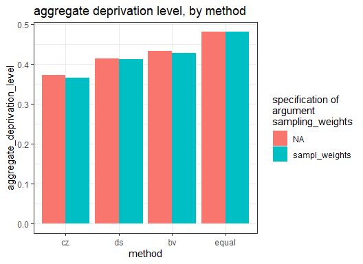
Lets investigate the differences of the methods not just based on the single figure aggregate_deprivation_level, but on a comparison of summary_by_item-tables.
items_sel <- c("y1", "y2", "y3", "y4", "y5", "y6", "y7") # a selection of items
methods <- c("cz", "ds", "bv", "equal") # all available methods
sampling_weights <- c("sampl_weights", NA) # sampling weights specified/unspecified
methods <- rep(methods, length(sampling_weights))
# repeat methods as many times as there are different (non-)specifications of sampling weights
sampling_weights <- rep(sampling_weights, each = n_distinct(methods))
# repeat each different sampling weights (non-)specifications as many times as there are distinct methods
# aggregate summary_by_item-tables and channel them to a plot
lapply(X = seq_along(methods),
function(X) mdepriv(simul_data,
items_sel,
sampling_weights = sampling_weights[X],
method = methods[X],
output = "summary_by_item")) %>%
tibble(., # 'listed' summary_by_item-tables as variable
method = methods, # methods as varible
sampling_weight = !is.na(sampling_weights) # TRUE if sampl. weights applied else FALSE
) %>%
unnest() %>%
filter(Item != "Total") %>% # filter out rows with the totals inherited from the summary_by_item-tables
gather("key", "value", -sampling_weight, -method, -Item) %>%
mutate(key = factor(key, c("Index", "Weight", "Contri", "Share")),
method = factor(method, c("cz", "ds", "bv", "equal"))) %>%
# change key & method to factor to get certain, non-alphabetical sequences in plot grid
# key (rows), method (colums)
ggplot(aes(x = Item, y = value, fill = sampling_weight)) +
geom_col(position = position_dodge()) +
facet_grid(rows = vars(key), col = vars(method), scales = "free_y") +
theme_bw() +
ggtitle('method vs. key figures from the summary by item') +
theme(legend.position = "top")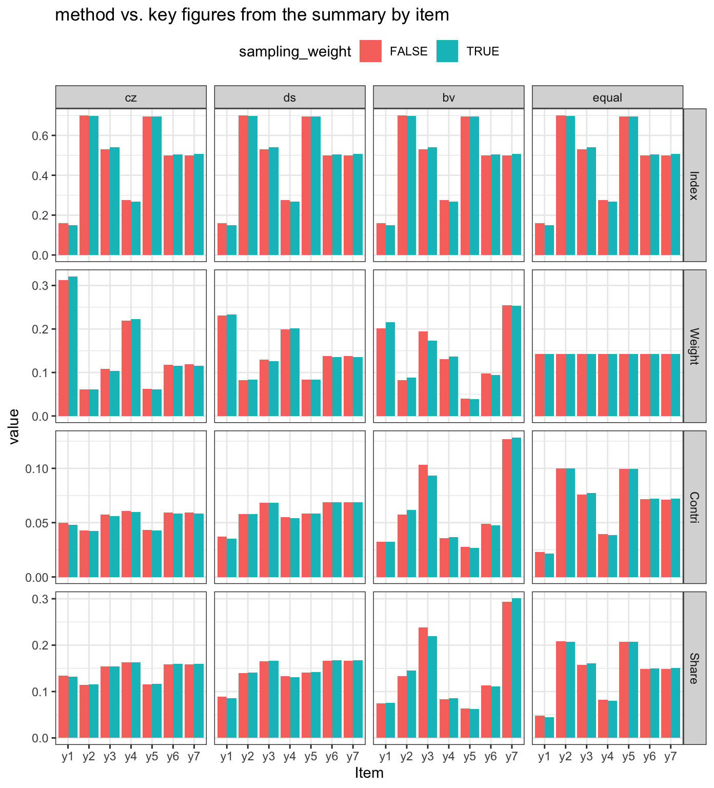
Different methods do matter as far as their result, but this should not be confused with the default argument settings of mdepriv:
# The Cerioli & Zani (1990) weighting scheme is the default method and must not really be specified
cz_default <- mdepriv(simul_data, c("y1", "y2", "y3"))
cz_explicit <- mdepriv(simul_data, c("y1", "y2", "y3"), method = "cz")
all.equal(cz_default, cz_explicit)
#> [1] TRUE
# The Betti & Verma (1998) weighting scheme has to be chosen explicitly, ...
bv_standard_lazy <- mdepriv(simul_data, c("y1", "y2", "y3"), method = "bv")
# ... it is associated with two further arguments with default settings.
bv_standard_explicit <- mdepriv(simul_data, c("y1", "y2", "y3"), method = "bv",
bv_corr_type = "mixed", rhoH = NA)
all.equal(bv_standard_lazy, bv_standard_explicit)
#> [1] TRUEAs seen above, the Betti & Verma’s (1998) double-weighting method "bv" comes with default settings for the associated arguments bv_corr_type and rhoH. These arguments affect the second factor (wb) of the double-weighting and thus the overall outcome if "bv" is chosen as method.
bv_corr_type’s default setting "mixed" detects automatically the appropriate correlation type for each pair of items by the following rules:
"pearson": both items have > 10 distinct values."polyserial": one item has \(\le\) 10, the other > 10 distinct values."polychoric": both items have \(\le\) 10 distinct values.By choosing "pearson" as bv_corr_type this correlation type is forced on all combinations of items. Situations that would motivate "pearson" as a choice are rare and far-fetched. When ordinal indicators are present, and they are transformed to interval- or ratio-level variables (e.g., as ridits), forcing "pearson"-type correlations may make for more consistent redundancy reductions for all indicators.
The "mixed" correlation-type default is not only convenient, but also appropriate for most indicator constellations. One may want to know the type that "mixed" selects for a given pair of items. The function corr_mat, besides calculating the coefficients, can also reveal the involved correlation types. corr_mat’s first three arguments are the same as those of mdepriv. The options of the fourth argument corr_type are analogue to those of the mdepriv’s argument bv_corr_type, where "mixed" is also the default setting.
very_explicit <- corr_mat(data = simul_data, items = c("y1", "y4", "y6", "y7"),
sampling_weights = "sampl_weights", corr_type = "mixed", output = "both")
rather_minimalistic <- corr_mat(simul_data, c("y1", "y4", "y6", "y7"), "sampl_weights", output = "both")
all.equal(very_explicit, rather_minimalistic)
#> [1] TRUE
rather_minimalistic
#> $numeric
#> y1 y4 y6 y7
#> y1 1.0000000 0.79871297 0.370557815 0.139874614
#> y4 0.7987130 1.00000000 0.040235317 0.062735666
#> y6 0.3705578 0.04023532 1.000000000 -0.007169907
#> y7 0.1398746 0.06273567 -0.007169907 1.000000000
#>
#> $type
#> y1 y4 y6 y7
#> y1 "polychoric" "polychoric" "polyserial" "polyserial"
#> y4 "polychoric" "polychoric" "polyserial" "polyserial"
#> y6 "polyserial" "polyserial" "pearson" "pearson"
#> y7 "polyserial" "polyserial" "pearson" "pearson"Note that corr_mat’s output is set by default to "numeric". If desired "type" or "both" have to be specified.
mdepriv’s argument rhoH distributes high and low coefficients of the triangular item correlation table to two factors. By default rhoH is set to NA, which causes its automatic calculation according to Betti & Verma’s (1998) suggestion to divide the ordered set of correlation coefficients at the point of their largest gap (excluding the diagonal elements).
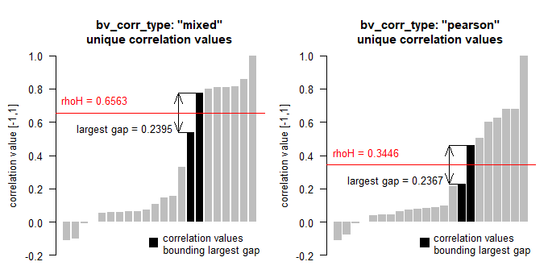
Alternatively, the user can set a fixed value for rhoH in the interval [-1, +1]. When rhoH is automatically calculated, the weights of items that overall are more weakly correlated with the other items turn out higher, compared to their weights when the user chooses a rhoH value far from the automatic version. Setting rhoH to -1 or +1 (the bounds of its range) causes all correlation coefficients to be assigned to one set only. However, in our experiments the item weight differences between models with automatically calculated vs. user-defined rhoH have been modest, rarely more than 10 percent up or down. Both variants - data-driven or user-defined - of rhoH, in combination with the chosen bv_coor_type, affect the outcome of the Betty-Verma double weighting model.
items_sel <- c("y1", "y2", "y3", "y4", "y5", "y6", "y7") # a selection of items
rhoHs <- c(-0.2, 0, 0.2, 0.4, 0.6, 0.8, 1, NA)
# fixed rhoHs & NA (= default specification for data driven rhoH)
bv_corr_types <- c("mixed", "pearson") # correlation types
rhoHs <- rep(rhoHs, length(bv_corr_types))
# repeat rhoHs as many times as there are different correlation types
bv_corr_types <- rep(bv_corr_types, each = n_distinct(rhoHs))
# repeat each different correlation type as many times as there are distinct values of rhoH
rhoH_type <- ifelse(is.na(rhoHs), "data driven", "fixed") # rhoH type / classification
rhoH_type <- factor(rhoH_type, c("fixed", "data driven"))
# factorize for non-alphabetical sequence in plot
# get and plot the (under the hood) applied rhoHs and aggregate_deprivation_level
lapply(X = seq_along(rhoHs),
function(X) mdepriv(simul_data,
items_sel,
method = "bv",
bv_corr_type = bv_corr_types[X],
rhoH = rhoHs[X],
output = c("aggregate_deprivation_level", "rhoH"))) %>%
bind_rows() %>%
mutate(bv_corr_type = bv_corr_types,
rhoH_type = rhoH_type) %>%
ggplot(aes(x = rhoH,
y = aggregate_deprivation_level,
col = bv_corr_type,
shape = rhoH_type)) +
geom_point(size = 3) +
theme_bw() +
scale_x_continuous(breaks = seq(-0.2,1,0.2), limits = c(-0.25, 1.05)) +
ggtitle("aggregate deprivation level vs. fixed and data driven rhoH")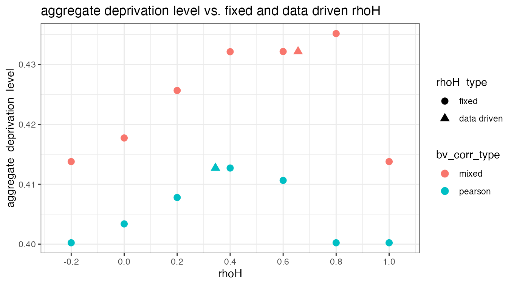
As far as this model with simulated data is representative of the behavior of rhoH, it would appear that the maximum aggregate deprivation level is at or near the one obtained when rhoH is entirely data-driven.
Setting a fixed value for rhoH by the user is rarely called for, except when a constant rhoH is required for the comparison of several models with double-weighting.
As a technicality, it may be noted that, if the user chooses more than one dimension, rhoH is common for all. If this is the case and rhoH is data-driven, rhoH might not equal the correlation coefficient between any of the items pairs within the dimensions. Instead the correlation coefficient at the upper bound of the greatest gap may be between two items that belong to different dimensions. This definition is necessary in order to avoid the breakdown of the Betti-Verma formula in models in which some dimension(s) has/have only one element. The technicality is of no practical consequence for the user.
Although historically Betti and Verma devised double-weighting for the method named after them, mdepriv makes it available in the other methods as well. That is, additionally to the standard methods the arguments wa and wb provide alternative, more flexible ways to select the weighting schemes. Weights are computed as the product of two terms as in the Betti-Verma scheme. wa selects the form of the first factor and is one of "cz", "ds", "bv" or "equal". wb selects the form of the second factor and is one of "mixed", "pearson" or "diagonal", where the latter sets all off-diagonal correlations to zero. Any true double-weighting scheme involves rhoH as does the Betti-Verma method, either as data-driven (the default) or fixed by specification.
Thus applying "diagonal" to wb and specifying wa as "cz", "ds" or "equal" basically delivers the same result as when choosing the corresponding named method. Only the first output element differs:
ds <- mdepriv(simul_data, c("y1", "y2", "y3"), method = "ds")
ds[1]
#> $weighting_scheme
#> [1] "Desai & Shah (1988) weighting scheme"
ds_diagonal <- mdepriv(simul_data, c("y1", "y2", "y3"), wa = "ds", wb = "diagonal")
ds_diagonal[1]
#> $weighting_scheme
#> [1] "User-defined weighting scheme: wa = \"ds\", wb = \"diagonal\"."
all.equal(ds[-1], ds_diagonal[-1])
#> [1] TRUEBetti & Verma (1998) weighting schemes also have lookalikes among the wa-wb-combinations:
bv <- mdepriv(simul_data, c("y1", "y2", "y3"), method = "bv", bv_corr_type = "pearson", rhoH = 0.3)
bv[1]
#> $weighting_scheme
#> [1] "Betti & Verma (1998) weighting scheme"
bv_pearson <- mdepriv(simul_data, c("y1", "y2", "y3"), wa = "bv", wb = "pearson", rhoH = 0.3)
bv_pearson[1]
#> $weighting_scheme
#> [1] "User-defined weighting scheme: wa = \"bv\", wb = \"pearson\"."
all.equal(bv[-1], bv_pearson[-1])
#> [1] TRUESo lets have a look at the items weights of some non-standard wa-wb-weighting schemes:
items_sel <- c("y1", "y2", "y3", "y4", "y5", "y6", "y7") # a selection of items
# wa-wb-combinations
wa <- c("cz", "ds", "equal", "bv")
wb <- c(rep("mixed", 3), "diagonal")
data.frame(wa, wb)
#> wa wb
#> 1 cz mixed
#> 2 ds mixed
#> 3 equal mixed
#> 4 bv diagonal
# list with summaries by items for each wa-wb-combination
summary_by_item <- lapply(X = seq_along(wa),
function(X) mdepriv(simul_data, items_sel, wa = wa[X], wb = wb[X],
output = "summary_by_item"))
# channel figures to a plot
tibble(wa, wb, summary_by_item) %>% # gather (variated) arguments & output in a tibble (i.e. data.frame)
unnest() %>%
filter(Item != "Total") %>% # filter out rows with the totals inherited from the summary_by_item-tables
ggplot(aes(x = Item, y = Weight, fill = Item)) +
geom_col(position = position_dodge()) +
facet_wrap(vars(wa, wb), ncol = 2) +
theme_bw() +
ggtitle('Item Weight from User Defined Double Weighting Schemes')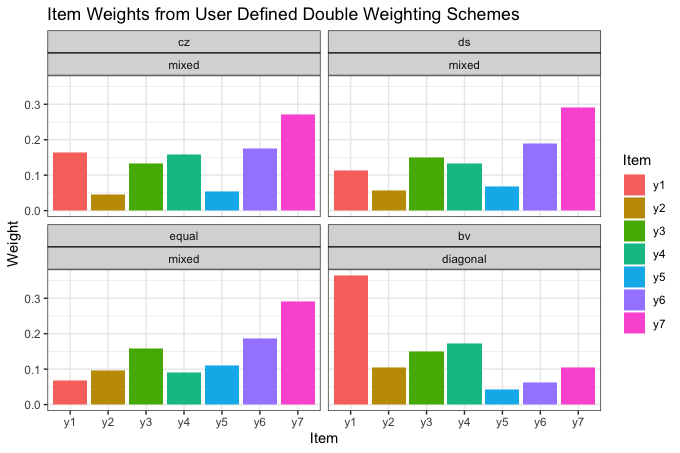
The largest differences in weights are between the "bv"-"diagonal" model vs. the three others, for all of which wb as set to "mixed". In the former, the correlations among items have no effect on the weights because of wb = "diagonal". In the latter, they take full effect, due to wb = "mixed". Note that for each of the seven items, the Desai-Shaw weight is in the interval defined by the respective Cerioli-Zani and equi-proportionate weights. This is so because Desai-Shaw’s sensitivity to the means of items is less than that of Cerioli-Zani; it is higher than in the equi-proportionate method, which is indifferent to the item means. The remarks and table above give reasons for selecting particular wa-wb-combinations in reference to analytic objectives.
Instead of a data-driven weighting scheme users can pass expertise-based weights to items. This is done by structuring the argument user_def_weights analogously to the items’ argument. For each of the dimensions (= group of items) the user-defined weights must sum up to 1. When returned as an output user_def_weights inherits the dimensions’ labelling specified by the items’ argument.
mdepriv(simul_data,
items = list('Group A' = c("y1", "y2"), 'Group B' = c("y5", "y6")),
user_def_weights = list(c(0.65, 0.35), c(0.8, 0.2)),
output = c("weighting_scheme",
"summary_by_dimension",
"summary_by_item",
"items",
"user_def_weights"))
#> $weighting_scheme
#> [1] "Item-wise user-defined weighting scheme"
#>
#> $summary_by_dimension
#> Dimension N_Item Index Weight Contri Share
#> 1 Group A 2 0.34900 0.5 0.17450 0.3470427
#> 2 Group B 2 0.65664 0.5 0.32832 0.6529573
#> 3 Total 4 NA 1.0 0.50282 1.0000000
#>
#> $summary_by_item
#> Dimension Item Index Weight Contri Share
#> 1 Group A y1 0.16000 0.325 0.052000 0.10341673
#> 2 Group A y2 0.70000 0.175 0.122500 0.24362595
#> 3 Group B y5 0.69579 0.400 0.278316 0.55351020
#> 4 Group B y6 0.50004 0.100 0.050004 0.09944712
#> 5 Total <NA> NA 1.000 0.502820 1.00000000
#>
#> $items
#> $items$`Group A`
#> [1] "y1" "y2"
#>
#> $items$`Group B`
#> [1] "y5" "y6"
#>
#>
#> $user_def_weights
#> $user_def_weights$`Group A`
#> [1] 0.65 0.35
#>
#> $user_def_weights$`Group B`
#> [1] 0.8 0.2The mdepriv arguments method, bv_corr_type, wa, wb, rhoH and/or user_def_weights set the weighting scheme. method, bv_corr_type and rhoH have default values. Any setting of bv_corr_type is bypassed if method is not "bv" and both wa and wb are unspecified. Any rhoH setting is bypassed if an effective single weighting scheme is applied. If user_def_weights is specified, the arguments method, bv_corr_type, wa, wb and rhoH do not matter. If that is confusing, the output elements "weighting_scheme", "wa", "wb", "rhoH" and "user_def_weights" can always be relied upon to tell the specifics of the weighting scheme effectively applied.
What’s going on under the hood if …
… no method is specified?
mdepriv(simul_data, c("y1", "y2", "y3"),
output = c("weighting_scheme", "wa", "wb", "rhoH", "user_def_weights"))
#> $weighting_scheme
#> [1] "Cerioli & Zani (1990) weighting scheme"
#>
#> $wa
#> [1] "cz"
#>
#> $wb
#> [1] "diagonal"
#>
#> $rhoH
#> [1] NA
#>
#> $user_def_weights
#> [1] NA… bv as method and else nothing with relevance for the weighing scheme is specified?
mdepriv(simul_data, c("y1", "y2", "y3"), method = "bv",
output = c("weighting_scheme", "wa", "wb", "rhoH", "user_def_weights"))
#> $weighting_scheme
#> [1] "Betti & Verma (1998) weighting scheme"
#>
#> $wa
#> [1] "bv"
#>
#> $wb
#> [1] "mixed"
#>
#> $rhoH
#> [1] 0.3472574
#>
#> $user_def_weights
#> [1] NA… bv as method + the associated bv_corr_type and rhoH are specified?
mdepriv(simul_data, c("y1", "y2", "y3"), method = "bv", bv_corr_type = "pearson", rhoH = 0.3,
output = c("weighting_scheme", "wa", "wb", "rhoH", "user_def_weights"))
#> $weighting_scheme
#> [1] "Betti & Verma (1998) weighting scheme"
#>
#> $wa
#> [1] "bv"
#>
#> $wb
#> [1] "pearson"
#>
#> $rhoH
#> [1] 0.3
#>
#> $user_def_weights
#> [1] NA… an effective single weighting method + meaningless bv_corr_type and rhoH are specified?
mdepriv(simul_data, c("y1", "y2", "y3"), method = "ds", bv_corr_type = "pearson", rhoH = 0.3,
output = c("weighting_scheme", "wa", "wb", "rhoH", "user_def_weights"))
#> $weighting_scheme
#> [1] "Desai & Shah (1988) weighting scheme"
#>
#> $wa
#> [1] "ds"
#>
#> $wb
#> [1] "diagonal"
#>
#> $rhoH
#> [1] NA
#>
#> $user_def_weights
#> [1] NA… user defined effective single weighting scheme and some meaningless rhoH specification are applied?
mdepriv(simul_data, c("y1", "y2", "y3"), wa = "bv", wb = "diagonal", rhoH = 0.7,
output = c("weighting_scheme", "wa", "wb", "rhoH", "user_def_weights"))
#> $weighting_scheme
#> [1] "User-defined weighting scheme: wa = \"bv\", wb = \"diagonal\"."
#>
#> $wa
#> [1] "bv"
#>
#> $wb
#> [1] "diagonal"
#>
#> $rhoH
#> [1] NA
#>
#> $user_def_weights
#> [1] NA… user defined double weighting scheme with + rhoH specification kick in?
mdepriv(simul_data, c("y1", "y2", "y3"), wa = "equal", wb = "mixed", rhoH = 0.5,
output = c("weighting_scheme", "wa", "wb", "rhoH", "user_def_weights"))
#> $weighting_scheme
#> [1] "User-defined weighting scheme: wa = \"equal\", wb = \"mixed\"."
#>
#> $wa
#> [1] "equal"
#>
#> $wb
#> [1] "mixed"
#>
#> $rhoH
#> [1] 0.5
#>
#> $user_def_weights
#> [1] NA… expertise-base weighting scheme and an ignored method are applied?
mdepriv(simul_data, list(c("y1", "y2"), c("y3", "y4")), method = "cz",
user_def_weights = list(c(0.3, 0.7), c(0.45, 0.55)),
output = c("weighting_scheme", "wa", "wb", "rhoH", "user_def_weights"))
#> $weighting_scheme
#> [1] "Item-wise user-defined weighting scheme"
#>
#> $wa
#> [1] NA
#>
#> $wb
#> [1] NA
#>
#> $rhoH
#> [1] NA
#>
#> $user_def_weights
#> $user_def_weights$`Dimension 1`
#> [1] 0.3 0.7
#>
#> $user_def_weights$`Dimension 2`
#> [1] 0.45 0.55 As shown above the output elements "weighting_scheme", "wa", "wb", "rhoH" and "user_def_weights" tell reliably the specifics of the weighting scheme effectively applied. With the exception of "weighting_scheme", those output elements can be re-used as specifications for homonymous arguments in another model.
model <- mdepriv(simul_data, c("y1", "y2", "y3"), output = "all")
model$wa
#> [1] "cz"
model$wb
#> [1] "diagonal"
other_model <- mdepriv(simul_data, c("y1", "y2", "y3"), wa = model$wa, wb = model$wb, output = "all")
all.equal(model, other_model) # is there a difference? ...
#> [1] "Component \"weighting_scheme\": 1 string mismatch"
# ... expect for weighting_scheme all outputs are the same
model$weighting_scheme
#> [1] "Cerioli & Zani (1990) weighting scheme"
other_model$weighting_scheme
#> [1] "User-defined weighting scheme: wa = \"cz\", wb = \"diagonal\".""wa" can be applied also to the argument method of another model:
model <- mdepriv(simul_data, c("y1", "y2", "y3"), output = "all")
other_model <- mdepriv(simul_data, c("y1", "y2", "y3"), method = model$wa, output = "all")
all.equal(model, other_model) # no difference
#> [1] TRUEWhereas "wb" can be applied only to the argument bv_corr_type, and only if it is not "diagonal":
model <- mdepriv(simul_data, c("y1", "y2", "y3"), method = "bv", bv_corr_type = "pearson", output = "all")
other_model <- mdepriv(simul_data, c("y1", "y2", "y3"), method = model$wa, bv_corr_type = model$wb, output = "all")
all.equal(model, other_model) # no difference
#> [1] TRUENote that situations where recycling of outputs as specifications for setting weighting schemes make sense are rare. This is the case if a certain weighting scheme should be run on different datasets or different selections of items. Except for data driven rhoHs and specified user_def_weights, which are cumbersome to re-type (with every digit) there is not much practical use for doing so.
The scores are the individual deprivation values, calculated as the vector products of the individual item values and the weights returned by mdepriv.
The score summary is obtained via the output option "summary_scores":
items_sel <- c("y1", "y2", "y3", "y4", "y5", "y6", "y7") # a selection of items
mdepriv(simul_data, items_sel, method = "ds", output = "summary_scores")
#> N_Obs. Mean Std._Dev. Min Max
#> 1 100 0.4135734 0.1982925 0.08118954 0.9443571The output option "score_i" provides direct access to the vector of scores for their immediate further use:
items_sel <- c("y1", "y2", "y3", "y4", "y5", "y6", "y7") # a selection of items
bv_diagonal_scores <- mdepriv(simul_data, items_sel, "sampl_weights",
wa = "bv", wb = "diagonal", output = "score_i")
eq_mixed_scores <- mdepriv(simul_data, items_sel, "sampl_weights",
wa = "equal", wb = "mixed", output = "score_i")
par(mfrow=c(1,3), mar=c(4,4,4,1), oma=c(0.5,0.5,0.5,0), las = 1)
hist(bv_diagonal_scores, ylim = c(0, 15), breaks = seq(0,1,0.05),
xlab = "", main = "scores: wa: bv & wb: diagonal", col = "gray")
hist(eq_mixed_scores , ylim = c(0, 15), breaks = seq(0,1,0.05),
xlab = "", main = "scores: wa = equal & wb = mixed", col = "gray")
plot(bv_diagonal_scores, eq_mixed_scores, xlim = c(0, 1), ylim = c(0, 1),
xlab = "scores: wa: bv & wb: diagonal",
ylab = "scores: wa: equal & wb: mixed",
main = "scores: bv/diagonal vs. equal/mixed")
abline(0, 1, lty = 2, lwd = 2, col = "red")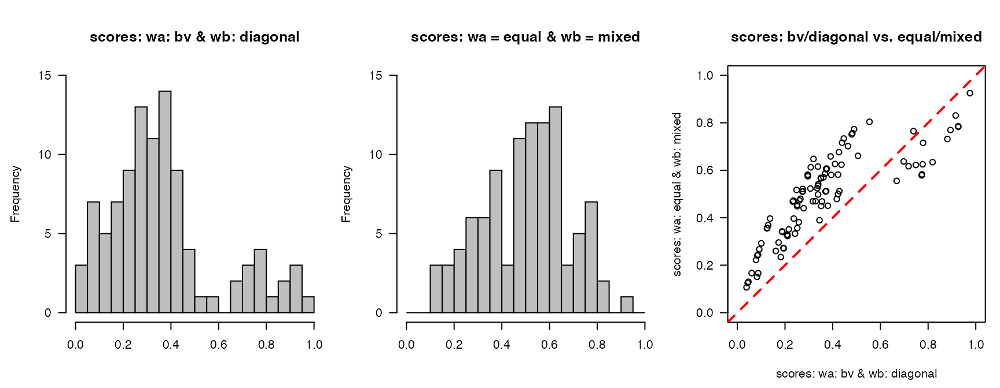 These scores are also merged to the output element "data":
# default heading of score column
mdepriv(simul_data, items_sel, output = "data") %>% head(3)
#> id y1 y2 y3 y4 y5 y6 y7 sampl_weights score_i
#> 1 1 0 0 0 0.0 0.369 0.174 0.196 0.556 0.06663388
#> 2 2 1 0 1 0.2 0.762 0.832 1.000 1.500 0.72888025
#> 3 3 0 1 1 0.4 0.708 0.775 0.833 0.973 0.49115525
# user-defined heading of score column
mdepriv(simul_data, items_sel, score_i_heading = "score_i_user_name", output = "data") %>% head(3)
#> id y1 y2 y3 y4 y5 y6 y7 sampl_weights score_i_user_name
#> 1 1 0 0 0 0.0 0.369 0.174 0.196 0.556 0.06663388
#> 2 2 1 0 1 0.2 0.762 0.832 1.000 1.500 0.72888025
#> 3 3 0 1 1 0.4 0.708 0.775 0.833 0.973 0.49115525Thus the scores are twofold accessible:
items_sel <- c("y1", "y2", "y3", "y4", "y5", "y6", "y7") # a selection of items
model <- mdepriv(simul_data, items_sel, output = "all") # method (default) = "cz"
all.equal(model$score_i, model$data$score_i)
#> [1] TRUEThe score column heading effects the ability of the output element "data" being used as input data in another model:
new_model <- mdepriv(model$data, items_sel, method = "ds", output = "all")
#> Error in mdepriv(model$data, items_sel, method = "ds", output = "all"): "score_i" is not valid as argument 'score_i_heading' for the current model. For the argument 'data' already includes a column by this name, possibly as the result of a previous mdepriv model. Therefore, give a different name for the scores column in the output data by specifying the argument 'score_i_heading'.Note: "score_i" is the default setting of the argument score_i_heading. By distinguishing the score columns using the argument score_i_heading in a cascade of models, the output element "data" can be re-used multiple times.
new_model <- mdepriv(model$data, items_sel, method = "ds", score_i_heading = "new_score_i", output = "all")
head(new_model$data, 3) %>% mutate_if(is.double, function(x) round(x,3))
#> id y1 y2 y3 y4 y5 y6 y7 sampl_weights score_i new_score_i
#> 1 1 0 0 0 0.0 0.369 0.174 0.196 0.556 0.067 0.082
#> 2 2 1 0 1 0.2 0.762 0.832 1.000 1.500 0.729 0.715
#> 3 3 0 1 1 0.4 0.708 0.775 0.833 0.973 0.491 0.571If the purpose is to gather the scores columns from a cascade of models, and in order to avoid confusion, it is expedient to name each scores column with reference to its very model:
model_1 <- mdepriv(simul_data, items_sel, method = "bv",
score_i_heading = "score_i_1", output = "all")
model_2 <- mdepriv(model_1$data, items_sel, method = "ds",
score_i_heading = "score_i_2", output = "all")
model_3 <- mdepriv(model_2$data, items_sel, wa = "cz", wb = "mixed",
score_i_heading = "score_i_3", output = "all")
head(model_3$data, 3) %>% mutate_if(is.double, function(x) round(x,3))
#> id y1 y2 y3 y4 y5 y6 y7 sampl_weights score_i_1 score_i_2 score_i_3
#> 1 1 0 0 0 0.0 0.369 0.174 0.196 0.556 0.082 0.082 0.103
#> 2 2 1 0 1 0.2 0.762 0.832 1.000 1.500 0.788 0.715 0.786
#> 3 3 0 1 1 0.4 0.708 0.775 0.833 0.973 0.644 0.571 0.641To demonstrate a two-level deprivation model with the Betti-Verma double weighting rule operating at both levels we use the dataset MSNA_HC.
help("MSNA_HC")Check the data set structure…
str(MSNA_HC)
#> 'data.frame': 2855 obs. of 15 variables:
#> $ id : int 1 2 3 4 5 6 7 8 9 10 ...
#> $ sampl_weights : num 0.636 1.086 0.657 0.657 1.086 ...
#> $ upazilla : chr "Teknaf" "Teknaf" "Teknaf" "Teknaf" ...
#> $ union : chr "Teknaf Paurashava" "Nhilla" "Baharchara" "Baharchara" ...
#> $ hhh_gender : chr "male" "male" "male" "male" ...
#> $ ls_1_food : num 0.518 0.728 0.362 0.554 0.464 ...
#> $ ls_2_livelihood: num 0.5 0.5 0.5 0.5 0.75 1 0.75 0.75 0.5 1 ...
#> $ ls_3_shelter : num 0.9137 0.3204 0.3204 0.0696 0.3204 ...
#> $ water_1 : int 0 0 0 0 0 0 0 0 0 1 ...
#> $ water_2 : int 0 0 0 0 1 0 0 1 0 1 ...
#> $ water_3 : int 0 0 0 0 0 0 0 0 0 0 ...
#> $ sanit_1 : int 1 1 0 1 1 1 1 1 0 1 ...
#> $ sanit_2 : int 0 0 0 0 0 0 0 1 1 1 ...
#> $ sanit_3 : int 1 1 0 0 0 1 0 1 0 0 ...
#> $ sanit_4 : int 0 0 0 1 0 0 0 1 0 0 ...… and the items distrubutions.
items <- MSNA_HC %>% select(ls_1_food:sanit_4) %>% names() # all items
MSNA_HC %>%
select(items) %>%
gather(key = "item", value = "value") %>%
ggplot(aes(value)) +
geom_histogram(breaks = seq(0, 1, 0.05)) +
facet_wrap(~item, ncol = 3) +
theme_bw() +
ggtitle("Items Distributions")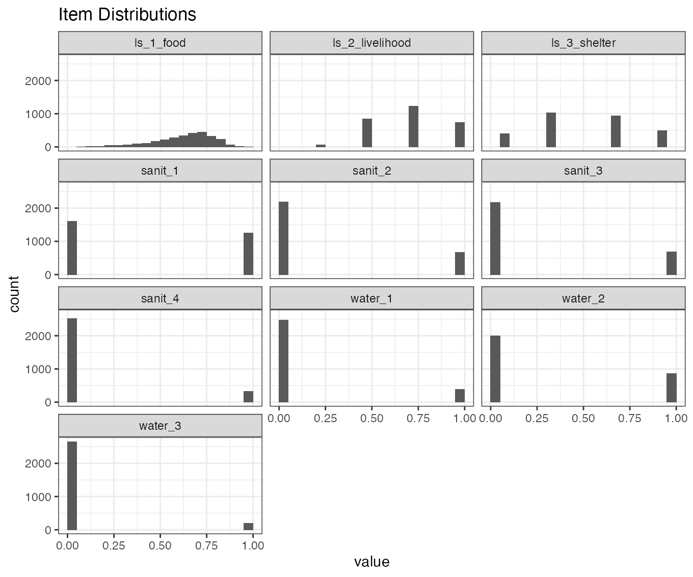
At the lower level (level_1), the seven binary WASH (Water, Sanitation and Hygiene) items will be aggregated to a continuous WASH deprivation indicator, ls_4_WASH. To equalize subsector contributions, water (prefix water_) and sanitation (prefix sanit_) items are grouped in different dimensions.
# grouping items in dimensions
items_level_1 <- list('water' = str_subset(items, "water_"), 'sanit' = str_subset(items, "sanit_"))Check correlation type of items pairs according to the mixed-rule
corr_mat(MSNA_HC, items_level_1, output = "type") # corr_type (default) = "mixed"
#> $water
#> water_1 water_2 water_3
#> water_1 "polychoric" "polychoric" "polychoric"
#> water_2 "polychoric" "polychoric" "polychoric"
#> water_3 "polychoric" "polychoric" "polychoric"
#>
#> $sanit
#> sanit_1 sanit_2 sanit_3 sanit_4
#> sanit_1 "polychoric" "polychoric" "polychoric" "polychoric"
#> sanit_2 "polychoric" "polychoric" "polychoric" "polychoric"
#> sanit_3 "polychoric" "polychoric" "polychoric" "polychoric"
#> sanit_4 "polychoric" "polychoric" "polychoric" "polychoric"
# all correlation type are "polychoric"In this humanitarian context, there is no basis to consider one or the other water or sanitation problem more or less important on the basis of their different prevalence. Therefore, in aggregating the seven binary water and sanitation items, for the first weighting factor we set the argument wa = "equal". However, we keep redundancy control active. That is, the second weighting factor wb = "mixed" has the effect of reducing weights on more redundant items. (Note that because all WASH items are binary 0 or 1, choosing "mixed" results in "polychoric" for all item pairs. wb = "diagonal" would be neutral to redundancy; and wb = "pearson" would underrate the strength of correlations between binary items).
This model returns the deprivation scores as a column "ls_4_WASH" (argument score_i_heading) merged to the output element "data":
model_level_1 <- mdepriv(MSNA_HC, items_level_1, "sampl_weights", wa = "equal", wb = "mixed",
score_i_heading = "ls_4_WASH", output = "all")
# check structure of output element data
model_level_1$data %>% str()
#> 'data.frame': 2855 obs. of 16 variables:
#> $ id : int 1 2 3 4 5 6 7 8 9 10 ...
#> $ sampl_weights : num 0.636 1.086 0.657 0.657 1.086 ...
#> $ upazilla : chr "Teknaf" "Teknaf" "Teknaf" "Teknaf" ...
#> $ union : chr "Teknaf Paurashava" "Nhilla" "Baharchara" "Baharchara" ...
#> $ hhh_gender : chr "male" "male" "male" "male" ...
#> $ ls_1_food : num 0.518 0.728 0.362 0.554 0.464 ...
#> $ ls_2_livelihood: num 0.5 0.5 0.5 0.5 0.75 1 0.75 0.75 0.5 1 ...
#> $ ls_3_shelter : num 0.9137 0.3204 0.3204 0.0696 0.3204 ...
#> $ water_1 : int 0 0 0 0 0 0 0 0 0 1 ...
#> $ water_2 : int 0 0 0 0 1 0 0 1 0 1 ...
#> $ water_3 : int 0 0 0 0 0 0 0 0 0 0 ...
#> $ sanit_1 : int 1 1 0 1 1 1 1 1 0 1 ...
#> $ sanit_2 : int 0 0 0 0 0 0 0 1 1 1 ...
#> $ sanit_3 : int 1 1 0 0 0 1 0 1 0 0 ...
#> $ sanit_4 : int 0 0 0 1 0 0 0 1 0 0 ...
#> $ ls_4_WASH : num 0.237 0.237 0 0.267 0.282 ...At the second level (level_2), in the aggregation of the four continuous living-standards-indicators (ls_1_food, ls_2_livelihood, ls_3_shelter, ls_4_WASH), the default Betti-Verma method is used, by setting method = "bv". This activates both mechanisms of the double-weighting scheme - rewarding more discriminating indicators with higher weights, and penalizing redundant ones with lower weights.
# save the "data" return by the lower level model
MSNA_HC_2 <- model_level_1$data
# save all column headings with prefix ls_ (living standards) as items of the higher level
(items_level_2 <- names(MSNA_HC_2) %>% str_subset("ls_"))
#> [1] "ls_1_food" "ls_2_livelihood" "ls_3_shelter" "ls_4_WASH"
# save higher level model
model_level_2 <- mdepriv(MSNA_HC_2, items_level_2, method = "bv", output = "all")Compare the items and scores of the second level:
model_level_2$data %>%
select(c("score_i", "hhh_gender", items_level_2)) %>% # dplyr::select()
gather(key = "item", value = "value", -"score_i", -"hhh_gender") %>%
ggplot(aes(x = value, y = score_i, col = hhh_gender)) +
geom_point(pch = 1, alpha = 0.5) +
facet_wrap(~item, ncol = 2) +
scale_x_continuous(breaks = seq(0,1,0.2), limits = c(0,1)) +
scale_y_continuous(breaks = seq(0,1,0.2), limits = c(0,1)) +
theme_bw() +
ggtitle("ls model (2nd level): items vs. score_i") +
labs(col = "gender of\nhousehold\nhead")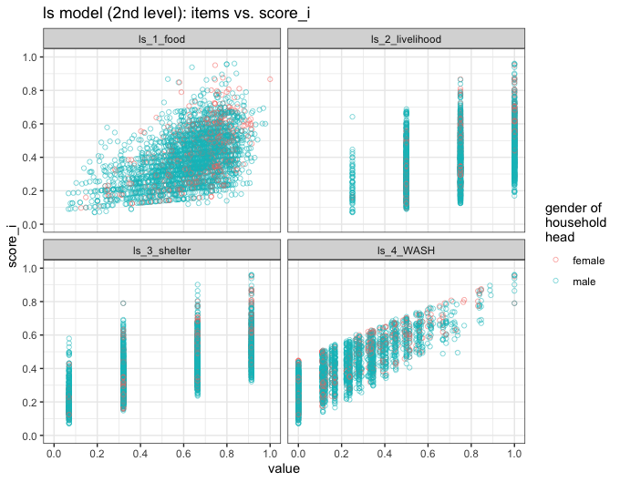
Since the scores are returned merged to the original data it is easy to compare them to variables with potential explanatory value. Thus, we ask: Do union (commune) and gender of household head have any predictive value for the distribution of deprivation scores?
model_level_2$data %>%
ggplot(aes(x = union, y = score_i, fill = hhh_gender)) +
stat_boxplot(geom ='errorbar', width = 0.5, position=position_dodge(0.7)) +
geom_boxplot(width = 0.6, position=position_dodge(0.7)) +
theme_bw() +
scale_y_continuous(breaks = seq(0,1,0.2), limits = c(0,1)) +
ggtitle("union (commune), gender of household head vs. score_i") +
labs(fill = "gender of\nhousehold\nhead", x = "union (commune)") +
theme(axis.text.x = element_text(angle = 45, hjust = 1)) +
annotate("text", x = 1, y = 1, hjust = 0,
label = paste0("female: n = ", sum(model_level_2$data$hhh_gender == "female"))) +
annotate("text", x = 1, y = 0.95, hjust = 0,
label = paste0("male: n = ", sum(model_level_2$data$hhh_gender == "male")))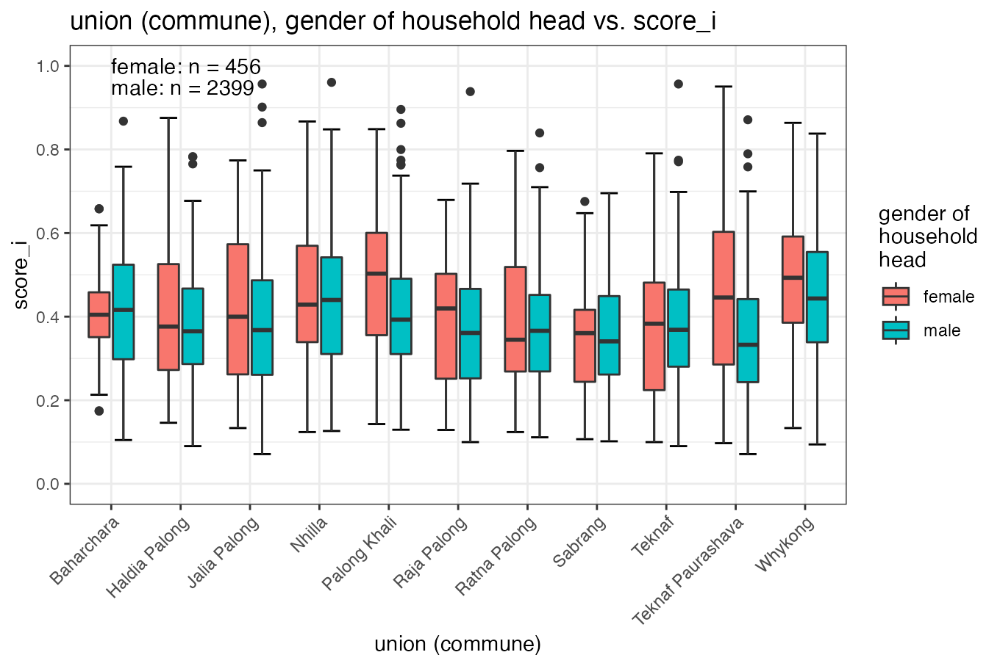
Of particular note are the gender differences (much higher median deprivation scores for female-headed households) in Palong Khali Union and in the Teknaf Upazila headquarter Union (Paurashava).
The handling of returns of multiple mdepriv models, which each comes as a list, can become cumbersome. We make this more convenient by combining the lists in a data.frame. Every model becomes a row and the different output elements are gathered as columns/variables.
Saving some models’ outputs as lists:
outputs <- c("all", "summary_by_dimension")
# explicitly add the "summary_by_dimension" table so it's included also if no dimensions are specified
items_sel <- c("y1", "y2", "y3", "y4", "y5", "y6", "y7") # a selection of items
dim <- list(c("y1", "y2"), c("y3", "y4"), c("y5", "y6", "y7"))
# a grouping of items in dimensions
w_expertise <- list(c(0.4, 0.6), c(0.7, 0.3), c(0.45, 0.3, 0.25))
# expertise-base weights for (grouped) items
# models with no dimensions specified
bv <- mdepriv(simul_data, items_sel, method = "bv", output = outputs)
equal <- mdepriv(simul_data, items_sel, method = "equal", output = outputs)
bv_diagonal <- mdepriv(simul_data, items_sel, wa = "bv", wb = "diagonal", output = outputs)
equal_mixed <- mdepriv(simul_data, items_sel, wa = "equal", wb = "mixed", output = outputs)
# models with dimension specification
bv_dim <- mdepriv(simul_data, dim, method = "bv", output = outputs)
expertise_dim <- mdepriv(simul_data, dim, user_def_weights = w_expertise, output = outputs)Combining the lists to a data.frame:
l <- list(bv, equal, bv_diagonal, equal_mixed, bv_dim, expertise_dim)
# gather all the models' returns in one list
names(l) <- c("bv", "equal", "bv_diagonal", "equal_mixed", "bv_dim", "expertise_dim")
# name the list with reference to the models
mat <- do.call(rbind, l)
# turn each model-output / list-element into a row of a matrix
is(mat)
#> [1] "matrix" "array" "structure" "vector"
df <- as_tibble(mat) # turn the matrix into a data.frame/tibble
df$model <- factor(names(l), level = names(l))
# add a column for model identification as factor with non-alphabetical order
is(df)
#> [1] "tbl_df" "tbl" "data.frame" "list" "oldClass"
#> [6] "vector"For more insight into this data.frame use this code:
data.frame(
class_of_variable = map_chr(df, function(x) class(x)),
classes_within_variable = sapply(X = names(df),
function(X)
(map_chr(df[[X]], function(x) class(x))) %>%
unique() %>%
paste(collapse = " or ")
))
#> class_of_variable classes_within_variable
#> weighting_scheme list character
#> aggregate_deprivation_level list numeric
#> summary_by_dimension list data.frame
#> summary_by_item list data.frame
#> summary_scores list data.frame
#> score_i list numeric
#> sum_sampling_weights list numeric
#> data list data.frame
#> items list list
#> sampling_weights list character
#> wa list character
#> wb list character
#> rhoH list numeric
#> user_def_weights list logical or list
#> score_i_heading list character
#> model factor factorExcept for "model", all variables are of the class list. As expected, only the columns/outputs "user_def_weights" and "user_def_weights" are at their core lists, respectively lists or single logical NAs. The rest consists either of single values, of vectors or of data.frames, which are easy to compile to an overall data.frames with dplyr::bind_rows() and tidyr::unnest().
Select and use model returns of interest saved in the data.frame:
# compile a single column/variable consisting at its core of data.frames
bind_rows(df$summary_scores)
#> N_Obs. Mean Std._Dev. Min Max
#> 1 100 0.4321696 0.2013452 0.04912143 0.9603282
#> 2 100 0.4801443 0.1905186 0.10528571 0.9421429
#> 3 100 0.3717380 0.2273104 0.03950519 0.9744880
#> 4 100 0.5019077 0.1798727 0.10929403 0.9239400
#> 5 100 0.4049227 0.2040694 0.06620614 0.9555567
#> 6 100 0.5085708 0.2159222 0.08426667 0.9595000
# compile several variables to a data.frame ...
df %>% select("model", "wa", "wb", "rhoH", "summary_scores") %>% unnest()
#> # A tibble: 6 x 9
#> model wa wb rhoH N_Obs. Mean Std._Dev. Min Max
#> <fct> <chr> <chr> <dbl> <int> <dbl> <dbl> <dbl> <dbl>
#> 1 bv bv mixed 0.656 100 0.432 0.201 0.0491 0.960
#> 2 equal equal diagonal NA 100 0.480 0.191 0.105 0.942
#> 3 bv_diagonal bv diagonal NA 100 0.372 0.227 0.0395 0.974
#> 4 equal_mixed equal mixed 0.656 100 0.502 0.180 0.109 0.924
#> 5 bv_dim bv mixed 0.656 100 0.405 0.204 0.0662 0.956
#> 6 expertise_dim <NA> <NA> NA 100 0.509 0.216 0.0843 0.960
# compile and plot
par(cex = 0.65) # reduce plotting text
df %>%
select("model", "aggregate_deprivation_level") %>%
unnest() %>%
barplot(aggregate_deprivation_level ~ model, data = .)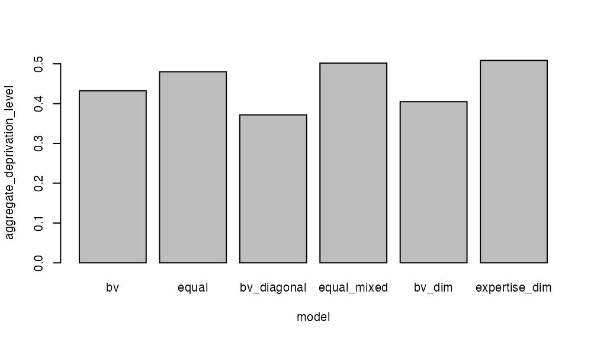
# and once again compile and plot
df %>%
select(c("model", "score_i")) %>%
unnest() %>%
ggplot(aes(score_i)) +
geom_histogram(breaks = seq(0, 1, 0.05)) +
facet_wrap(~model, ncol = 3) +
theme_bw() +
ggtitle("Scores' Distribution")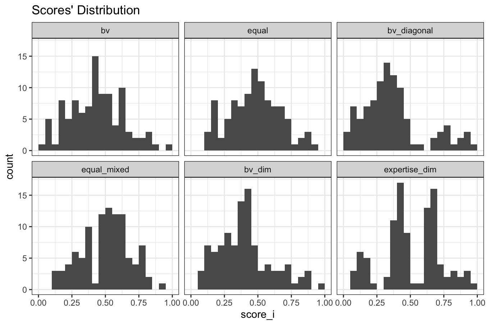
We thank Philippe Van Kerm, who, together with Maria Noel Pi Alperin, both with the Luxembourg Institute of Socio-Economic Research (LISER, formerly CEPS/INSTEAD, Luxembourg), wrote the code and documentation of the Stata command -mdepriv-, for encouraging us to translate it to R. We thank Patrice Chataigner, OkularAnalytics, Geneva, for moral and financial support. We thank Edouard Legoupil, UNHCR, for moral and technical support.
Betti, G. & Verma, V. K. (1998), ‘Measuring the degree of poverty in a dynamic and comparative context: a multi-dimensional approach using fuzzy set theory’, Working Paper 22, Dipartimento di Metodi Quantitativi, Universita di Siena. [A similar version is available at https://www.researchgate.net/profile/Gianni_Betti/publication/241227568_Measuring_the_degree_of_poverty_in_a_dynamic_and_comparative_context_A_multi-dimensional_approach_using_fuzzy_set_theory/links/00b49533307370c675000000/Measuring-the-degree-of-poverty-in-a-dynamic-and-comparative-context-A-multi-dimensional-approach-using-fuzzy-set-theory.pdf (2019-12-05)]
Cerioli, A. and S. Zani (1990). A fuzzy approach to the measurement of poverty. Income and wealth distribution, inequality and poverty. C. Dagum and M. Zenga. Urdorf, Switzerland, Springer: 272-284.
Desai, M. & Shah, A. (1988), ‘An econometric approach to the measurement of poverty’, Oxford Economic Papers, 40(3):505-522.
Lemmi, A. A. and G. Betti, Eds. (2006). Fuzzy set approach to multidimensional poverty measurement, Springer Science & Business Media.
Pi Alperin, M. N. & Van Kerm, P. (2009), ‘mdepriv - Synthetic indicators of multiple deprivation’, v2.0 (revised March 2014), CEPS/INSTEAD, Esch/Alzette, Luxembourg. http://medim.ceps.lu/stata/mdepriv_v3.pdf (2020-01-02).